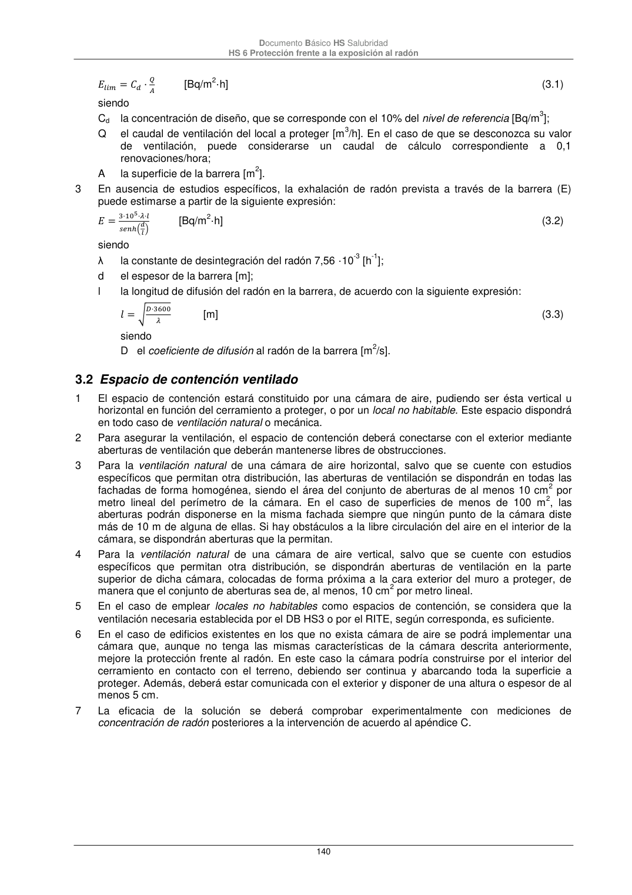

DB-HS · 3.2 Espacio de contención ventilado · versión 2022-06-14 · capa oficial
Formatos: JSON compacto · Markdown · PDF fuente
Ámbito del documento · texto del ámbito · documento y tablas
ID técnico a0311 · PDF pág. 140-141 · jerarquía no validada por persona · contrastado con el literal de la página 140 (candidato tipográfico); no validado por persona · padre: a0308
3.2 Espacio de contención ventilado 1 El espacio de contención estará constituido por una cámara de aire, pudiendo ser ésta vertical u horizontal en función del cerramiento a proteger, o por un local no habitable. Este espacio dispondrá en todo caso de ventilación natural o mecánica. 2 Para asegurar la ventilación, el espacio de contención deberá conectarse con el exterior mediante aberturas de ventilación que deberán mantenerse libres de obstrucciones. 3 Para la ventilación natural de una cámara de aire horizontal, salvo que se cuente con estudios específicos que permitan otra distribución, las aberturas de ventilación se dispondrán en todas las fachadas de forma homogénea, siendo el área del conjunto de aberturas de al menos 10 cm2 por metro lineal del perímetro de la cámara. En el caso de superficies de menos de 100 m2, las aberturas podrán disponerse en la misma fachada siempre que ningún punto de la cámara diste más de 10 m de alguna de ellas. Si hay obstáculos a la libre circulación del aire en el interior de la cámara, se dispondrán aberturas que la permitan. 4 Para la ventilación natural de una cámara de aire vertical, salvo que se cuente con estudios específicos que permitan otra distribución, se dispondrán aberturas de ventilación en la parte superior de dicha cámara, colocadas de forma próxima a la cara exterior del muro a proteger, de manera que el conjunto de aberturas sea de, al menos, 10 cm2 por metro lineal. 5 En el caso de emplear locales no habitables como espacios de contención, se considera que la ventilación necesaria establecida por el DB HS3 o por el RITE, según corresponda, es suficiente. 6 En el caso de edificios existentes en los que no exista cámara de aire se podrá implementar una cámara que, aunque no tenga las mismas características de la cámara descrita anteriormente, mejore la protección frente al radón. En este caso la cámara podría construirse por el interior del cerramiento en contacto con el terreno, debiendo ser continua y abarcando toda la superficie a proteger. Además, deberá estar comunicada con el exterior y disponer de una altura o espesor de al menos 5 cm. 7 La eficacia de la solución se deberá comprobar experimentalmente con mediciones de concentración de radón posteriores a la intervención de acuerdo al apéndice C. Documento Básico HS Salubridad HS 6 Protección frente a la exposición al radón 141 8 Cuando no se cumplan las condiciones necesarias para el establecimiento de ventilación natural o se considere necesario aumentar la eficacia de la instalación en el caso de que las mediciones de concentración de radón posteriores a la intervención no ofrezcan valores aceptables, se dispondrán extractores mecánicos. En este caso las aberturas se dimensionarán según las características específicas de la cámara y las aberturas de admisión se situarán lo más lejos posible de la abertura de extracción para facilitar la ventilación del espacio. Las bocas de expulsión estarán situadas conforme a lo especificado en el apartado 3.2.1 del DB HS3, excepto lo relativo a la disposición en cubierta, que se considera opcional.

PDF fuente redistribuible: copia fiel enlazada en esta página (SHA256 verificado).